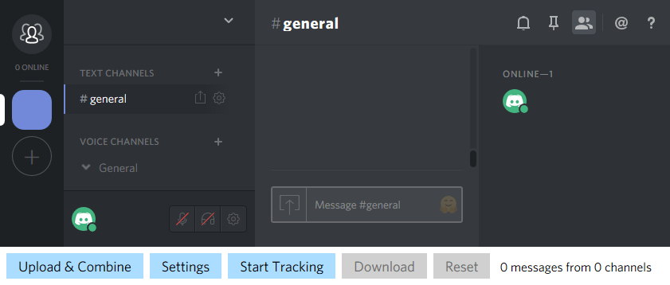

Discord History Tracker lets you save chat history in your servers, groups, and private conversations, and view it offline.
This page explains how to use Discord History Tracker entirely in your browser. While this method gets you started quicker and works on any device that has a modern web browser, it has significant limitations and fewer features than the desktop app.
Because everything happens in your browser, if the browser tab is closed, or your browser or computer crashes, you will lose all progress. Your browser may also crash or freeze if you have too many messages. If this is a concern, use the desktop app instead.
A tracking script will load messages according to your settings, and temporarily save them in your browser. Once you finish tracking, the browser will create an archive file you can save to your disk, and open in an offline viewer later.
Preferred option. Requires a browser addon, but DHT will stay up-to-date and be easily accessible on the Discord website.
The console is the only way to use DHT directly in the desktop app.
Your browser may not support copying to clipboard, please try copying the script manually:
Requires Firefox 69 or newer.
Whenever DHT is updated to work with a new version of Discord, it may no longer work with the previous version of Discord.
If you haven't received that Discord update yet, see Version History for information about recent updates, or if you need to use an older version of DHT.
When using the script for the first time, you will see a Settings dialog where you can configure the script. These settings will be remembered as long as you don't delete cookies in your browser.
By default, Discord History Tracker is set to automatically scroll up to load the channel history, and pause tracking if it reaches a previously saved message to avoid unnecessary history loading.
Before you Start Tracking, you may use Upload & Combine to load messages from a previously saved archive file into the browser.
When you click Download, the browser will generate an archive file from saved messages, and lets you save it to your computer.
First, save the Viewer file to your computer. Then you can open the downloaded viewer in your browser, click Load File, and select the archive to view.
Issues & Suggestions — Source Code — Follow Dev on Twitter — Support via Patreon — Support via Ko-fi